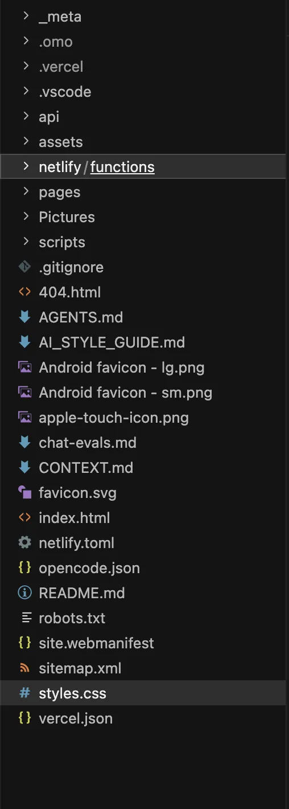
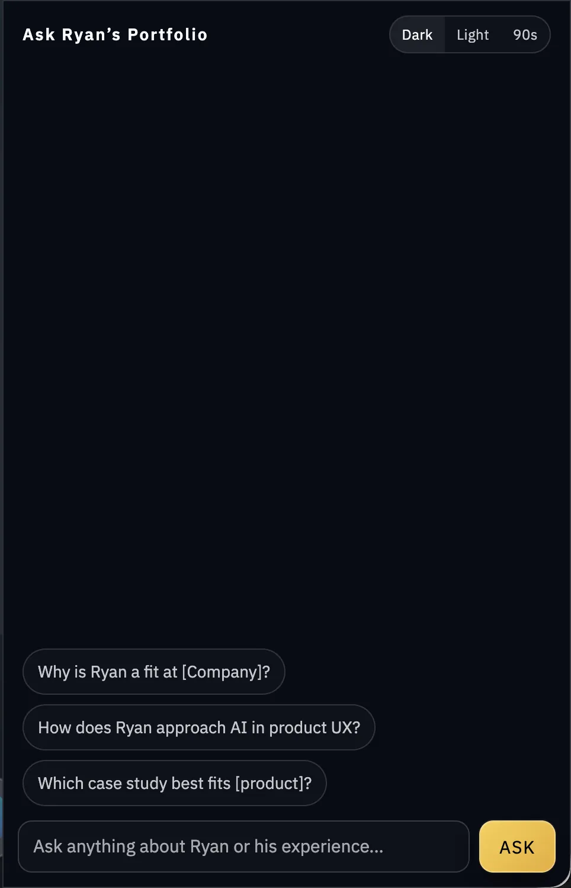
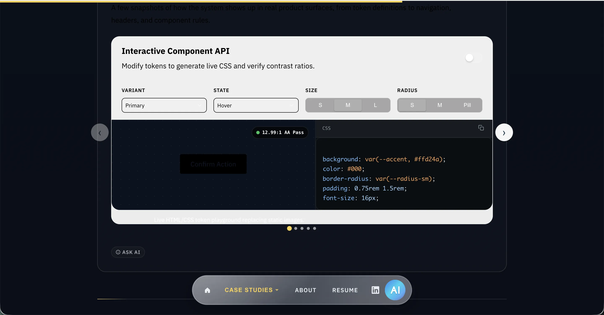
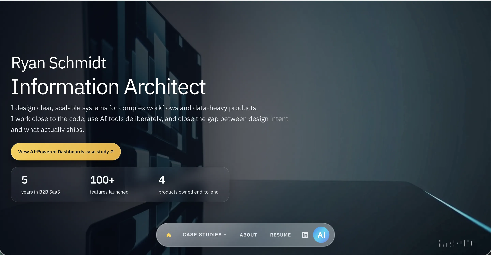
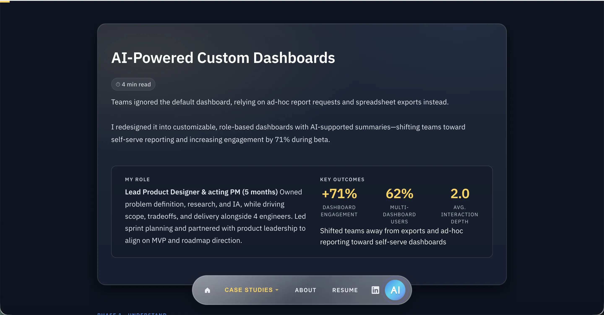
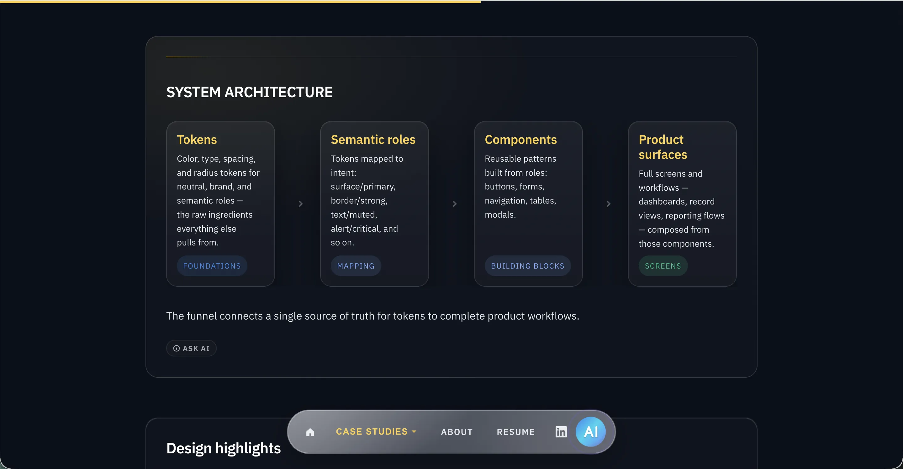

Prompts
Clear, constrained instructions defining what to build and how
FoundationI rebuilt my portfolio from scratch with AI-assisted coding tools because I wanted the site to prove more than visual design. It needed to show that I can move from product idea to shipped implementation without waiting on an engineering handoff.
Design leaders who can execute make better decisions earlier because they understand what implementation actually costs. Most portfolios show the thinking but not the shipping.
I wanted this portfolio to prove I can build, not just design. The question was whether AI tools could get me there without an engineering team behind me. Even more, I wanted to design an AI experience unrestrained by deadlines or priorities at my day job.
I intentionally skipped a traditional design-first process because the point was not another polished mockup. The point was to prove I could make real implementation decisions, work through technical tradeoffs, and ship a product-quality experience myself.
I deliberately skipped Figma for this project. I only opened it to check a few colors. I wanted to see if I could control the full design through code alone. That forced me to think in CSS and layout primitives instead of pixel pushes, and to validate decisions by running the result.
The key realization: AI only produces high-quality output when the structure behind it is clear.
The breakthrough was treating AI output like a design system problem. I stopped asking for one-off pages and started defining reusable prompts, layout patterns, components, and feature-level conventions.
Clear, constrained instructions defining what to build and how
FoundationReusable prompt structures for common UI and interaction problems
StructureReusable elements like navigation, cards, layouts, and sections
Building blocksFull experiences including case studies and interactive elements
ShippedThe system connects structured prompts to real product features, not just generated code.
Interactive walkthrough
Watch a visitor question travel through the portfolio assistant, from input to structured, context-aware answer, at your own pace.
User submits question from the chat widget
Receives question, checks tools needed, routes to RAG
Searches 1,400+ embedded project chunks for context
Generates answer from retrieved context + system prompt
Ryan has built an AI-powered portfolio assistant that uses RAG to answer visitor questions in real time. The system combines a Supabase vector store with Gemini 2.5 Flash to provide structured, context-aware responses about his product design work, systems thinking approach, and builder experience.
Ready Type a question or use the default prompt, then run the walkthrough.
Designing in Figma first slowed iteration. Working directly in HTML and CSS provided faster feedback loops and immediate validation.


AI didn't replace decision-making. It required direction, constraints, and review. The quality of output depended entirely on how clearly the problem was framed.
Instead of writing one-off code for each page, I created reusable structures that could scale across the portfolio.

These replaced static pages with interactive, structured, and code-driven experiences.
The following screenshots compare the previous version of this portfolio — hand-built, static HTML — against the AI-assisted rebuild described above.



The first version of the assistant used a single JSON knowledge base loaded into every chat request. It worked, but it was wasteful and difficult to scale because every query sent the entire knowledge base as context.
I replaced that approach with a Supabase PostgreSQL database using pgvector for semantic search. Portfolio content is chunked, embedded with Gemini, and retrieved based on relevance so the assistant can answer from the right context instead of the entire document.
The hardest part was response quality. I had to tune retrieval, prompt structure, context priority, caching, and rate limits so the assistant felt useful rather than like a novelty. The system now supports semantic search, streamed responses, session tracking, and resume-download analytics.
The site ships as fully custom HTML, CSS, and JavaScript, with no templates, CMS, or static site generator. Every page shares layout patterns and design tokens. The chat widget answers questions about my work using semantic search against a PostgreSQL vector store.
The real output is a repeatable workflow: I can go from idea to working feature in a single session, without blocking on engineering. That changes how quickly I can test and ship product-level work.
At one point the portfolio included dark mode and a Windows 95-inspired theme.
Both significantly increased CSS complexity.
The decision was made to focus on features that delivered greater user value.
The tools didn't just speed up execution. They exposed how much of good output depends on how clearly the problem is framed going in.